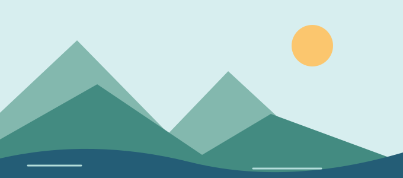

截图直接粘贴
将光标放在正文编辑区，粘贴剪贴板图片；也可点击原有图片按钮，选择多张本地图片依次上传。
粘贴截图、选择图片，或从历史图库再用一张。上传到 NodeImage，Markdown 图片链接直接插入当前帖子。
扩展 / 独立 JS：v1.0.2
论坛美化是独立的纯 CSS，不必安装上传助手。
分享一下今天的小发现。
文字写到这里，图片也应该跟得上。
点上方图片按钮，试试插入流程。

复用论坛原有的图片按钮和界面颜色。保留你写帖的方式，把重复操作交给助手。
将光标放在正文编辑区，粘贴剪贴板图片；也可点击原有图片按钮，选择多张本地图片依次上传。
上传后将 Markdown 链接写入当前帖子。扩展在编辑器确认写入后才提示成功；未插入的图片可从图库找回。
查看缩略图、打开原图、插入历史图片或删除不需要的图片。上传过的内容，不必再传一次。
两种版本均支持批量选择与粘贴。Chrome / Edge 扩展另外支持拖拽图片进入编辑器。
两个安装包，两个独立下载地址。
桌面端扩展，支持粘贴、选择文件、拖拽上传和历史图库。
下载扩展 ZIPnsimg-v1.0.2 文件夹。chrome://extensionsedge://extensions尚未上架扩展商店。支持 Manifest V3 环境；v1.0.2 尚未完成 Chrome / Edge 浏览器实测。
适用于支持用户脚本的浏览器或脚本管理器，提供上传、插入与图库管理。
下载独立 JSNSimg.user.js，导入浏览器的用户脚本功能或脚本管理器。nodeseek.com 上运行。独立 JS 不使用扩展 ZIP 的安装方式。建议只启用一种上传助手，避免同时拦截编辑器操作。
可先登录 NodeImage，让助手自动获取。自动获取失败时，手动填写已有 Key：
扩展版：点击工具栏里的 NSImg 图标，在 API Key 输入框粘贴；修改会自动保存。也可以点击“获取Api Key”重试。
独立 JS：打开图库，点击齿轮设置，在多行输入框填写 API Key，再点击“保存”。
打开或刷新发帖、回复编辑器。将光标放到图片应插入的位置。
粘贴截图，或点击编辑器原有的“图片”按钮选择本地文件。扩展也支持拖拽；多张图片会依次处理。
上传完成后检查正文中的 Markdown 图片链接。需要旧图时，点击编辑器顶部的“图片”入口，点击图库缩略图插入。
把完整 CSS 放进 NodeSeek 个人资料的自定义 style。
保留编辑器操作，让头像、资料卡、导航和日夜配色更统一。
展示布局思路，不是论坛截图；实际样式以浏览器和论坛页面为准。
纯样式调整，不提供图片上传功能。使用前建议备份原有自定义 style。
当前代码 8112 字符 / 8118 UTF-8 字节，低于 8180 限额。使用 CSS 嵌套、:has() 和锚点定位，需要支持这些特性的浏览器。移动端滚动与侧滑表现请以实际设备为准。
确认当前页面有发帖或回复编辑器，光标在正文中。图片可能已经上传成功，可打开历史图库重新插入；不要因插入失败反复上传同一张图片。
自动获取需要相应的 NodeImage 登录状态；已有 Key 可以直接手动填写。独立 JS 填写后需要点击“保存”。查看错误信息和网络权限：401 / 403 可能是认证或访问拒绝，其他网络错误也会影响上传，不代表保存的 Key 一定失效。
扩展会检查 PNG、JPEG、GIF、WebP、BMP 的真实文件头，避免扩展名与内容不符。独立 JS 将所选图片交给浏览器上传，最终能否接收由 NodeImage 决定。
图库删除操作会删除 NodeImage 上的图片，无法恢复。使用该图片链接的历史帖子可能因此无法显示，请在删除前确认。
上传助手不会自动安装论坛美化。需要在上方独立 CSS 模块复制完整代码，再到论坛个人资料的自定义 style 中保存。CSS 无需扩展或独立 JS 即可使用。
确认复制了完整代码、保存成功并刷新页面。样式依赖较新的浏览器特性；论坛页面更新也可能影响选择器。清空自定义 style，或恢复事先备份的内容，即可撤销美化。